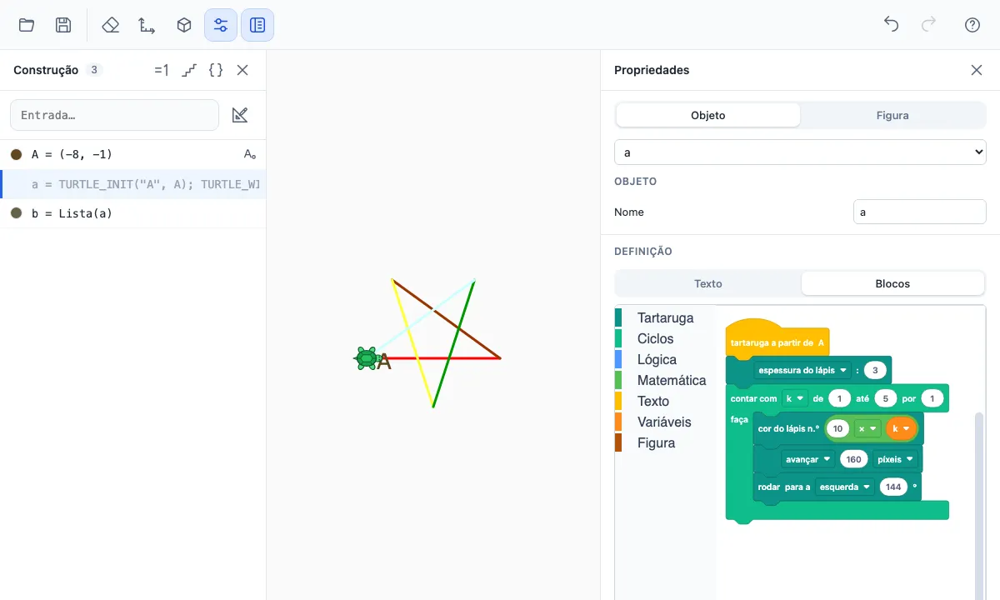

Expressões e controles deslizantes
Expressões
Toda linha que não é nem um ponto nem um comando cria uma expressão, exibida no canto superior esquerdo com duas casas decimais. Seu tipo é deduzido do texto:
| Linha | Tipo |
|---|---|
a = 3,
lista = [1, 2, 3]
|
constante |
t = "Olá" |
texto |
f = 0.5x^2 - 4 |
função de x (y, z, t); f(2) a
chama, f'(2) chama a sua derivada
|
f(x) = ax^2 + bx + c |
curva da função, traçada: ax lê-se
a x, os controles deslizantes a, b, c são
criados; f(2) também a chama
|
E = d(A, B) |
medida, recalculada quando a figura se move |
u = "AB = " + round(d(A, B)*100)/100
|
texto calculado |
Numa fórmula, um ponto vale suas coordenadas, um segmento seu comprimento, um círculo seu raio, um polígono sua área, um ângulo sua medida. Sintaxe completa: Fórmulas e programas.
Uma expressão é movida arrastando seu texto; presa a um ponto, ela o acompanha. Tocá-la a seleciona, ou escreve seu nome durante uma entrada.
Controles deslizantes
r = ControleDeslizante(0, 5, 2): de 0 a 5, valor 2.
Os limites podem ser expressões ou fórmulas (ControleDeslizante(0, d(A, B), 1)). Incremento, comprimento, orientação, alça e animação são
ajustados nas
propriedades.
r = 5 o transforma de novo numa constante.
Um nome desconhecido que começa por minúscula cria um controle
deslizante de −5 a 5, com incremento 0,1 e valor 1:
A = (a, 4), d = y = m x + p. Uma letra
grega cria um ângulo de 0 a 360°, com incremento 1° e valor 45°
(de 0 a 2π em radianos): P = (3; α). Uma linha
recusada não mantém os seus controles deslizantes.
Pontos calculados
-
M = (x(B) + 1, y(A)): coordenadas dadas por fórmulas. -
N = Ponto(2*B - A): fórmula cujo valor é um ponto. -
P = (3; 60°): coordenadas polares, raio e ângulo.
Quando o valor de uma linha nome = fórmula é um
ponto ou uma lista de pontos, botões no fim da linha propõem
Ponto,
Lista de pontos,
Lista de segmentos ou
Expressão. Enter usa o
botão destacado: ponto ou lista para um nome com maiúscula,
expressão senão. Daí lista = [1, 2, 3] e não
L = [1, 2, 3], que seria lido como um ponto do
espaço.
Listas de pontos
q = Lista(pts) desenha os pontos da expressão
pts; um ponto não definido interrompe o traçado.
Uma expressão selecionada cujo valor é uma lista de pontos
propõe também e
na zona contextual (e
para um valor ponto): a linha é
escrita e a expressão ocultada.
Sequências
L = Sequência((k, k^2), k, -2, 2) coloca os pontos
(k, k²) para k de −2 a 2, com passo 1; um quinto argumento dá
outro passo. O elemento também pode ser um número,
Segmento(P, Q), Reta(P, Q),
Círculo(O, r) ou Polígono(A, B, C, …),
cujos argumentos são fórmulas em k:
Sequência(Círculo(A, k), k, 1, 3).
Uma sequência pode conter outra, cujos limites leem a variável
da primeira:
Sequência(Sequência((i, j), j, 1, i), i, 1, 4).
Numa fórmula, uma lista de pontos é lida pelo seu nome, a partir
de 0: L[0], L[k-1],
L[i][j] para sequências aninhadas,
L.length para o seu número de elementos. Escreva
2*i: 2i é um número complexo.
Programas
Uma expressão pode ser um programa: instruções separadas por
;, a última dando o valor; ele pode formatar outros
objetos (S1.setHidden(1)). Linguagem:
Fórmulas e programas.
- (cabeçalho do painel “Construção”) abre um programa vazio; Criar ou Ctrl Enter cria a expressão.
- Para uma expressão existente, a seção Definição das propriedades edita o texto em várias linhas: Enter mantém o recuo, Tab recua, } desfaz o recuo, Ctrl Enter aplica, Esc restaura, Formatar recua conforme as chaves.
- Um erro seleciona a linha com erro ou o delimitador sem par.
Blocos e tartaruga
Um programa também se escreve com blocos: a secção Definição passa de Texto para Blocos. Os blocos arrastam-se das categorias (Ciclos, Lógica, Matemática, Texto, Variáveis, Globais, Funções, Figura) e encaixam-se sob o bloco programa; um bloco devolver dá o valor. Cada alteração aplica-se de imediato e anula-se como as outras. Texto e blocos mostram o mesmo programa: a escolha mantém-se para os seguintes.
As globais, partilhadas por todos os programas da figura, criam-se na categoria Globais com Criar uma global…; um programa define-as, aumenta-as ou lê-as.
Tartaruga, na zona contextual de um ponto, cria a tartaruga que parte desse ponto e abre-a em blocos. Avança (em píxeis ou em unidades), roda (em graus), levanta ou baixa o lápis, muda de cor e de espessura, preenche, escreve, vira-se para um ponto ou vai até ele. O seu desenho, uma lista, segue o ponto e os objetos que o programa lê. Enquanto o seu programa é mostrado, a tartaruga é desenhada onde termina, virada na sua direção (uma seta em 3D, verde quando o seu dorso está virado para si): cada bloco acrescentado mostra-a a avançar ou a rodar.

As tartarugas das figuras DGPad abrem-se da mesma forma: com o
painel de propriedades aberto, tocar na sua linha
blk_turtle_exp_… no painel «Construção». Um
programa com uma instrução sem bloco fica em texto.